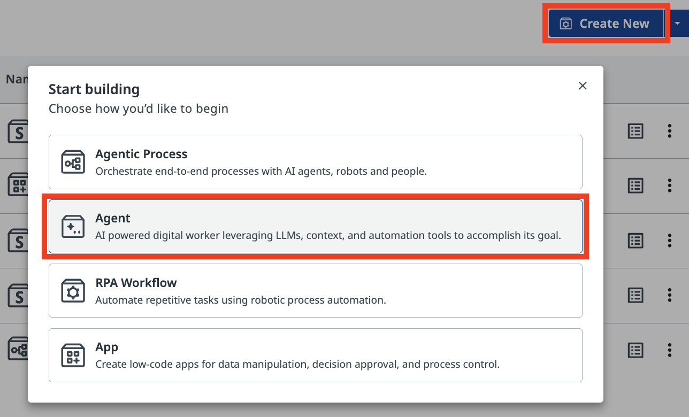
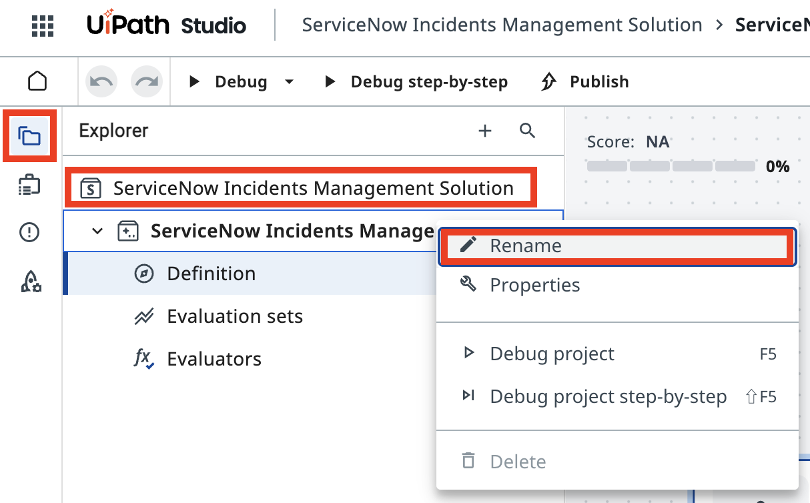
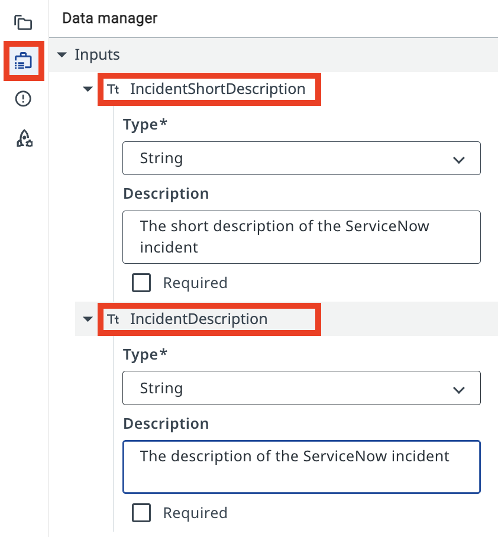
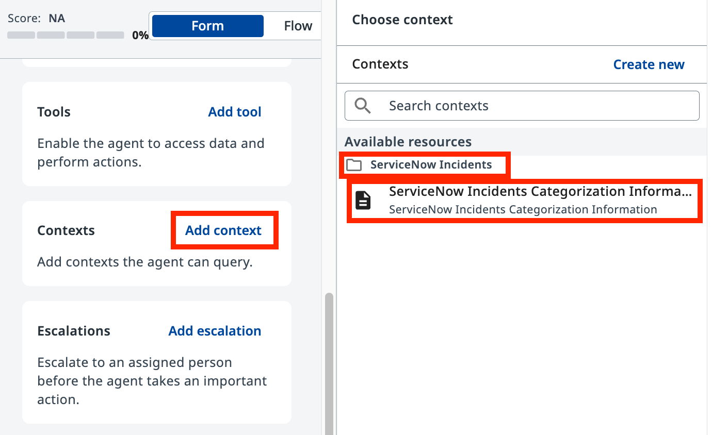
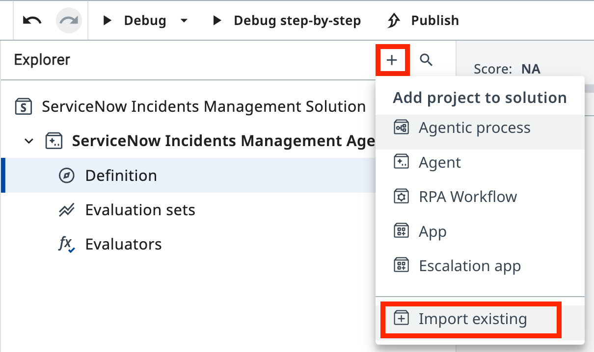
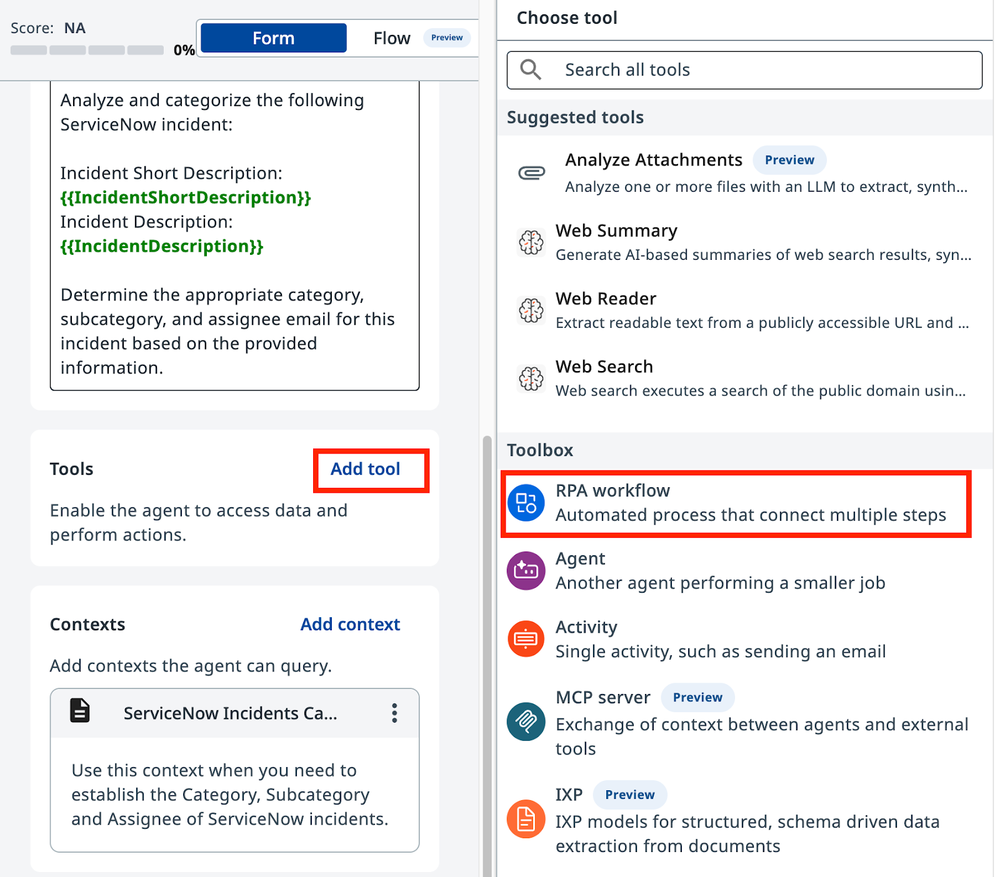
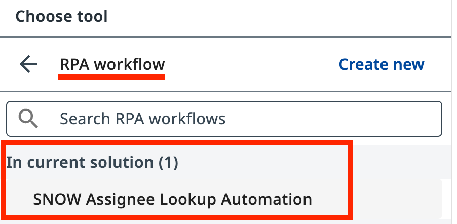
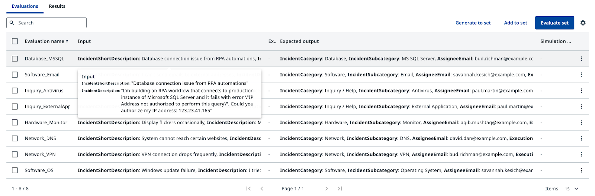

LLM with Context¶
Build a context-grounded ServiceNow incident categorization agent
Goal¶
Create a ServiceNow incident categorization agent in Agent Builder, configure its prompts, ground it in real data using Context Grounding, and validate its performance with Evaluations.
How Context Grounding Works¶
Without grounding, an LLM may produce plausible-sounding but incorrect category–subcategory pairs — combinations that don't exist in your system. Context Grounding anchors the agent to a real data source, so every decision traces back to valid entries in your context.
What the Evaluations Step Adds¶
Evaluations let you run a batch of test cases against your agent before deploying it. You define expected outputs, run the set, and measure how well the agent performs across edge cases.
Steps¶
Part 1: Create and configure the agent¶
-
In Studio Web, create a new Agent Solution.

-
Rename the solution to ServiceNow Incidents Management Solution.
-
Name the agent ServiceNow Incidents Management Agent.

-
Open the Data Manager panel and add the following Input Arguments (type: String):
Argument Description IncidentShortDescriptionShort description of the ServiceNow incident IncidentDescriptionFull description of the ServiceNow incident 
-
Add the following Output Arguments:
Argument Description IncidentCategoryCategory assigned to the incident IncidentSubcategorySubcategory assigned to the incident AssigneeEmailEmail address of the assigned expert ExecutionDetailsSummary of the classification steps taken 
Part 2: Configure the agent prompts¶
The agent uses two prompts: a System Prompt that defines its role and rules, and a User Prompt that structures how your inputs are passed in.
-
Enter the following text in the System Prompt field:
You are a ServiceNow Incidents categorization agent. Analyze incident details and determine the correct Category, Subcategory, and Assignee email address.
-
Enter the following text in the User Prompt field:
-
Test the agent with these sample values:
- Short Description:
CRM software crashes on launch - Description:
Every time I try to open the CRM software, it crashes immediately after the splash screen. This has been happening for the past week and is affecting my ability to manage customer interactions.

- Short Description:
Part 3: Add Context Grounding¶
-
Enable Context Grounding in the agent configuration.

-
Select ServiceNow Incidents Categorization Information as the context source.
The context contains only valid Category–Subcategory pairs. The agent must select from this list — it must not generate combinations that are not present.

-
Import the SNOW Assignee Lookup Automation project.
-
Add the imported automation as a tool. Use this description:
Use this tool to determine the email address of the on-duty expert for a given incident category and subcategory.
Part 4: Test with Evaluations¶
-
Go to the Evaluation Sets tab.
-
Import the provided JSON evaluation set. It contains 8 test cases:
# Short Description Expected Category 1 Database connection issue Database_MSSQL 2 Email sending failure Software_Email 3 Laptop slowdown Inquiry_Antivirus 4 CRM software crash Inquiry_ExternalApplication 5 Display flicker Hardware_Monitor 6 Website access issue Network_DNS 7 VPN disconnection Network_VPN 8 Windows update failure Software_OS 
-
Run the evaluation set and review the results.
